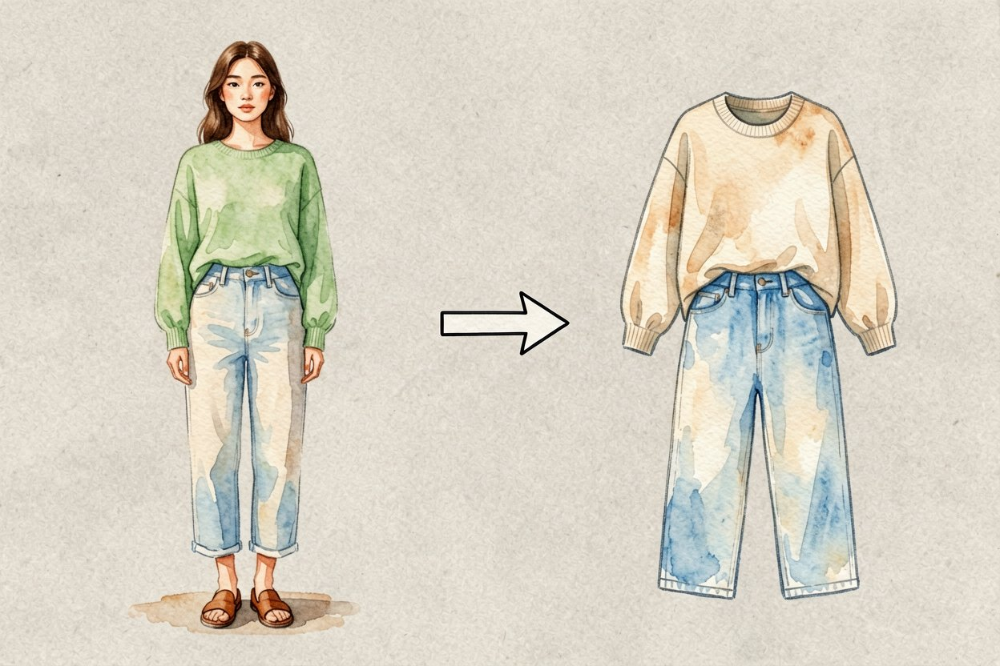
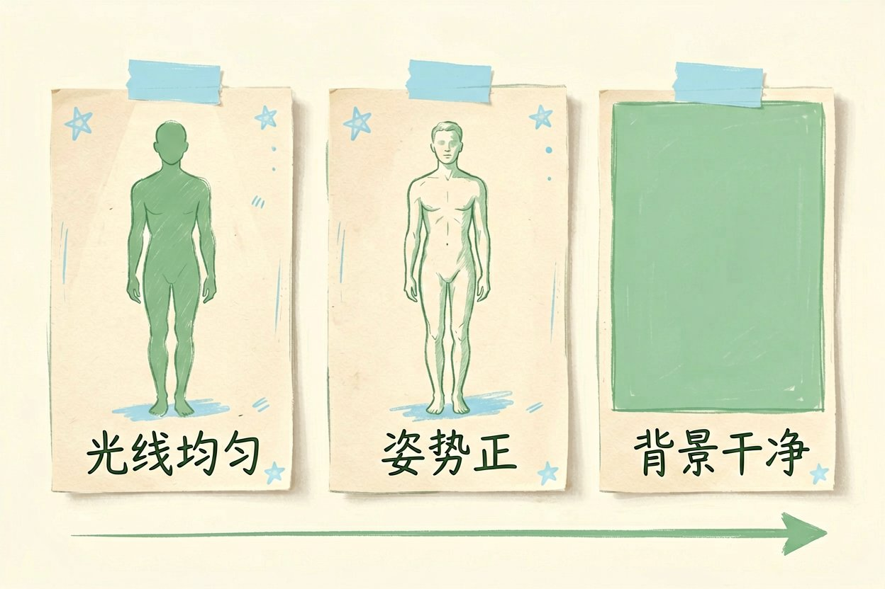
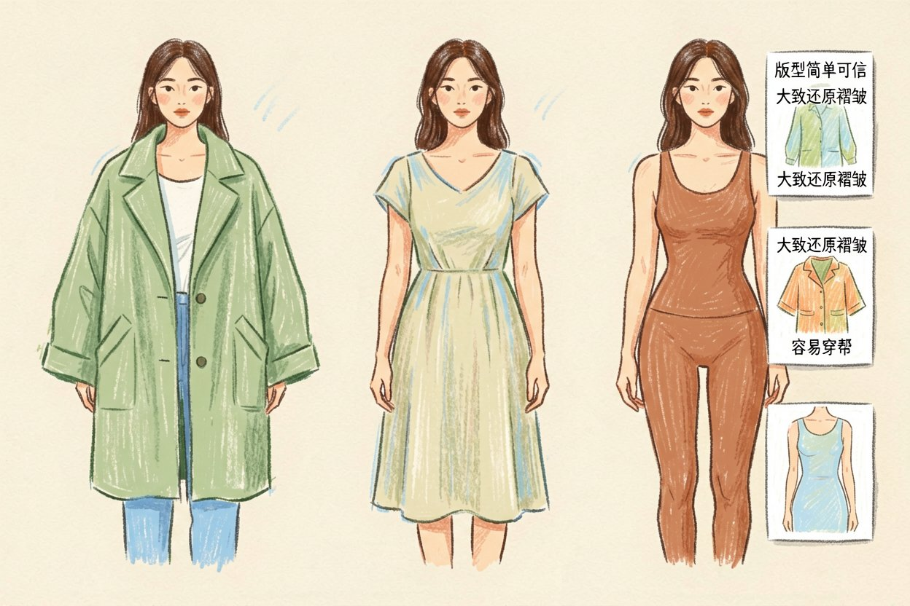
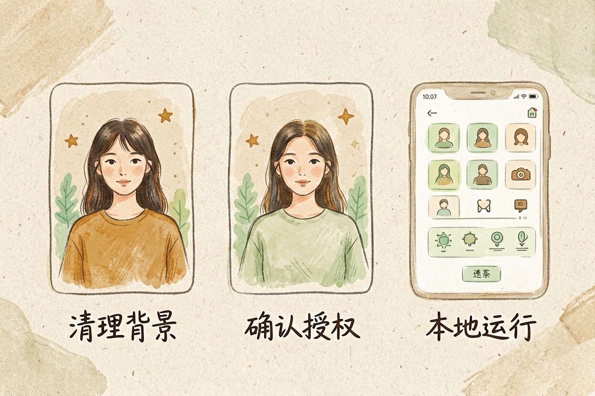
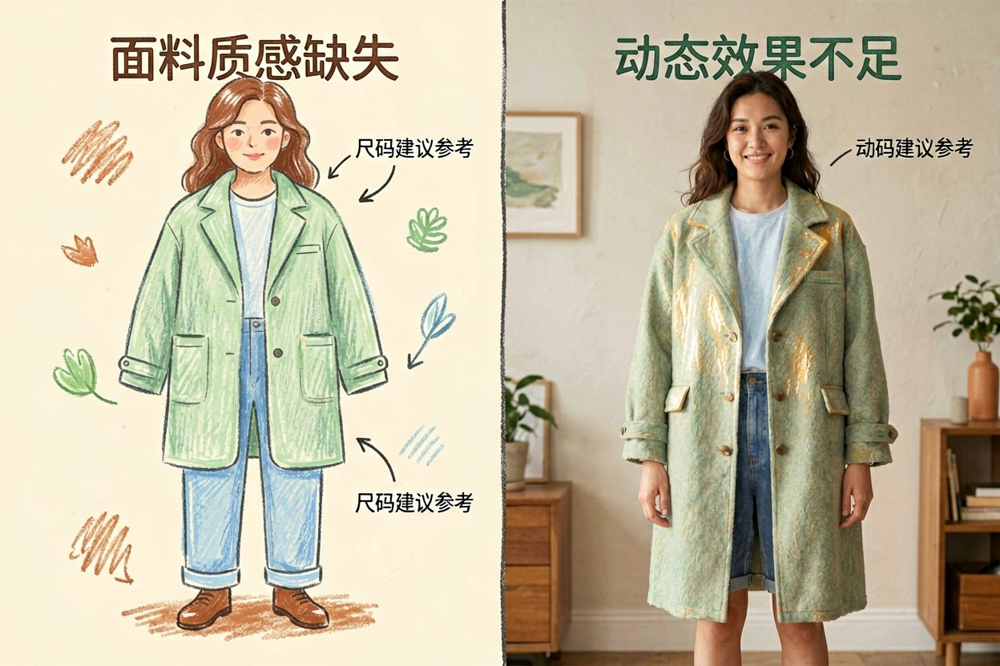
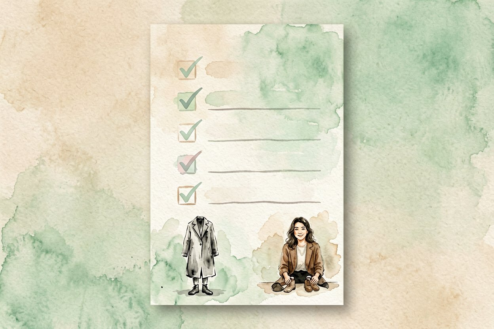

用 AI 虚拟试衣：先看效果再下单
网购衣服总怕穿上不好看？用 AI 虚拟试衣，上传一张照，它把衣服套你身上先预览。
AI 虚拟试衣是什么：一句话解释

AI 虚拟试衣，就是上传一张你的全身照和一件衣服的图，模型把衣服「穿」到你身上，生成一张上身效果预览。它基于AI 图像生成原理，但专门训练过人体和衣物的贴合。
和商家精修的模特图不同，它用的是你自己的身形，所以参考性更强。和AI 商品图拍摄也能接上：同一件衣服，先看上身再看平铺。
原图怎么拍才准

光线要均匀。侧光或暗光会让它误判身材轮廓，结果穿上显胖或显畸变，用正面自然光最稳。
姿势要正。双脚分开、身体挺直、双臂微离躯干，别抱臂别侧身，否则袖子和腰线会对不上。
背景要净。纯色墙比杂乱房间好，它更容易只识别你和衣服，不把背景也「穿」进去。
上传要求（给工具看的参数）：
原图：正面全身、双手自然下垂、纯色背景
服装图：平铺或模特图，纹理清晰
输出：仅替换服装，保留原身形与背景哪些衣服还原度高

同一件衣服多换几个角度试，比死盯一张预览更能看出哪里穿了帮。
上传前顺手裁掉多余背景，只留人和干净墙面，模型更不容易把背景当成衣服算进去。
宽松外套最稳。大衣、风衣、衬衫这类版型简单，贴合度高，预览最可信。
连衣裙次之。裙摆飘动和褶皱它能大致还原，但长裙下摆偶尔会飘歪。
紧身和复杂拼接最差。瑜伽裤、镂空、多层叠穿容易穿帮，预览只能当大概参考。
要做AI 证件照教程那种规范图时，它对姿势要求更死，试衣反而宽松些。
隐私和授权要注意

原图别带敏感背景。你家门牌、银行卡、私密物品可能随图一起传上云，上传前先清理画面。
商用授权要看清。拿预览图去开店或投广告，确认工具允许商用，否则有侵权风险。
选本地可跑的工具更稳。怕泄露就把模型跑在自己电脑，AI 图里加中文的本地方案同理。
它和真试衣的差距

面料质感它猜不准。雪纺的飘、牛仔的硬、针织的软，屏幕上很难还原，上手手感完全未知。
尺码建议别全信。它按图生成效果，不量你的真实三围，偏大偏小还得你自己判断。
动态场景更悬。走路、抬手时衣服怎么动，静态图给不了答案，预览也帮不上这点。
还有一个提升还原度的小技巧是分段处理。先让它换上衣、再换裤子，比一次性换全身更准，尤其上下身风格差很多时。遇到它把衣服穿出身体的情况，手动框定身形区域再生成，比反复整图重来省时间。不同工具对姿势敏感度不同，同一张原图换两家试，挑还原度高的固定用。预览满意后，再考虑要不要为详情页生成多角度版本。
别把预览当收货保证。AI 虚拟试衣只是帮你砍掉明显不合适的款，真合不合身，还是得等衣服到手那一试。

本文信息核对于 2026-08-14。AI 产品的价格、免费额度与功能变动频繁，实际以各工具官网当前说明为准。